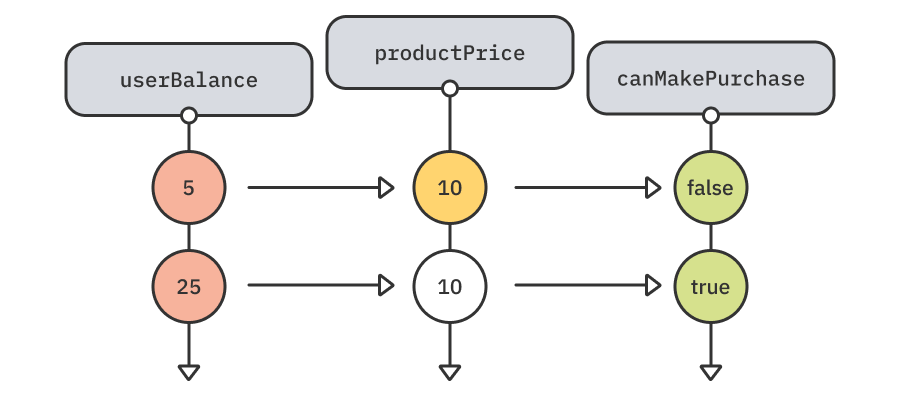
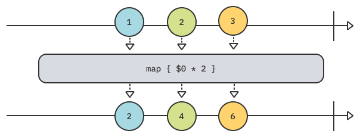
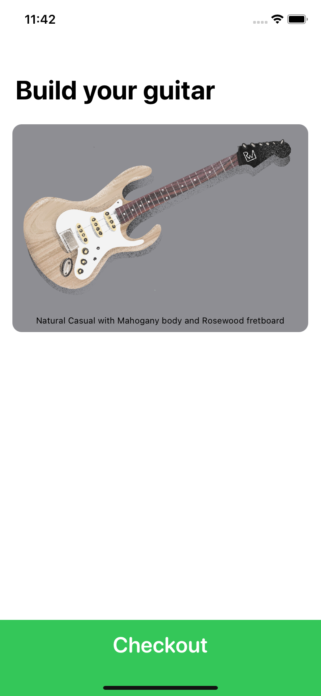
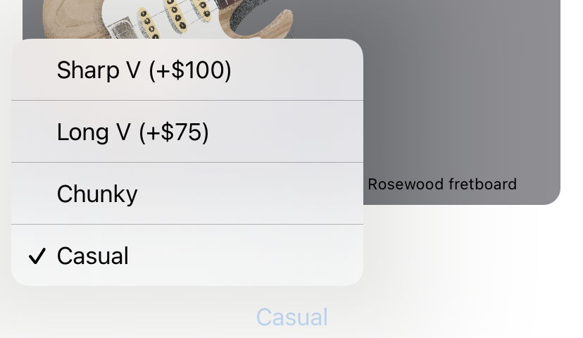
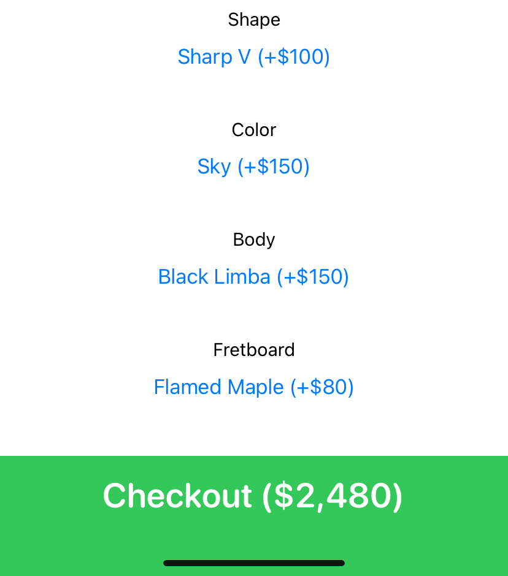
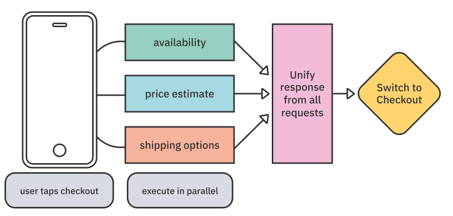
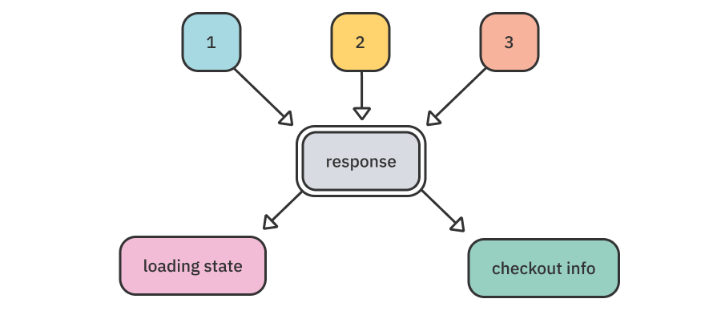
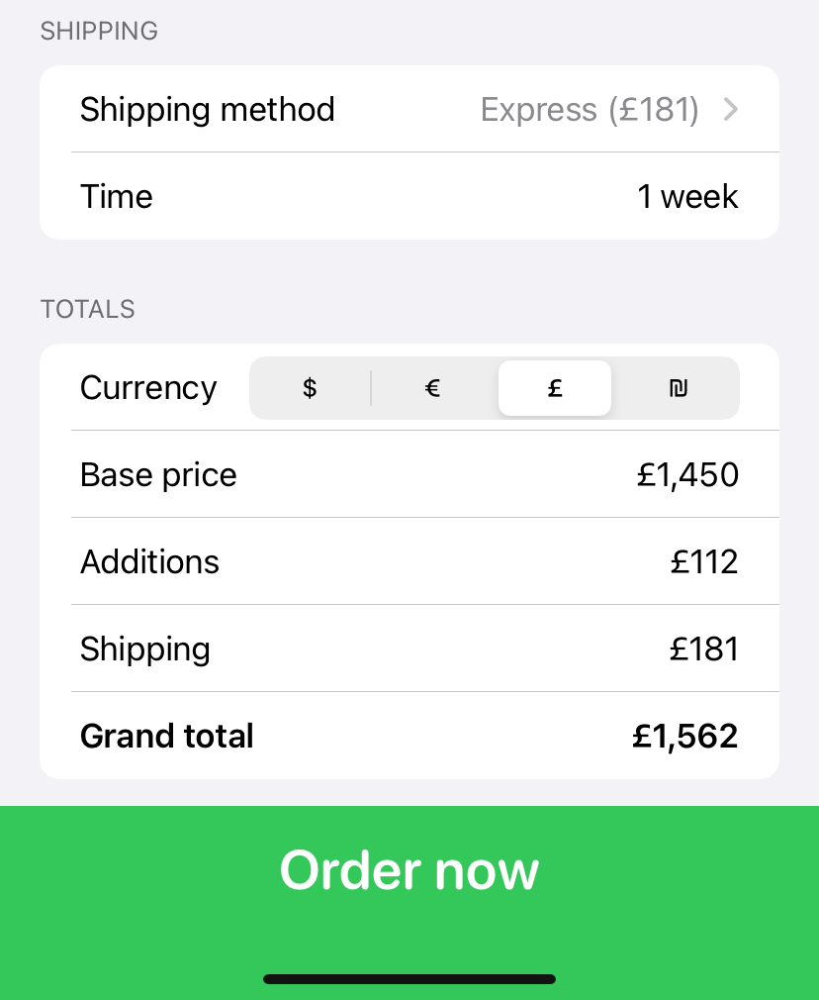

Chapter 11: Functional Reactive Programming¶
As a developer, you probably bump into buzzwords daily. Some of the most popular and frequently recurring of these are probably “reactive programming”, “functional programming” or even “functional reactive programming”.
Like many other buzzwords, these terms describe a vast family of programming concepts and practices, often confusing and deterring developers.
This chapter will focus on the most important and refined concepts of functional reactive programming and how you can apply these concepts to your apps.
Functional? Reactive?¶
Although these terms are often used together, they’re not mutually inclusive. This means that each term stands by itself.
Reactive programming¶
The idea of reactive programming is that instead of manually and imperatively reading the state or value of some entity, you listen, or subscribe, to changes of that entity and get notified whenever your state changes — in which case, you can react to the change and update your app accordingly. These changes are emitted over time:

In the example above, there is a stream of price values called totalPrice. Whenever it emits a new total price, you update your app’s UI accordingly.
This minimal concept is powerful in ensuring data integrity, but it also has many other benefits such as composition and easy transformations, which you’ll learn about in this chapter.
Consider this example (there’s no need to run this):
// 1
var userBalance = 5
let productPrice = 10
// 2
let canMakePurchase = userBalance >= productPrice
print(canMakePurchase)
// 3
userBalance += 20
print(canMakePurchase) // 3
In this example, you:
- Set a user’s balance of $5 and a product price of $10.
- Define a
canMakePurchaseboolean to make sure the user has a sufficient balance to purchase the product. Its value isfalsebecause the user has only $5. - Add $20 to the user’s balance, which means they should be able to buy the $10 product. But printing
canMakePurchasestill prints outfalse. Also, any other views in your app that depend oncanMakePurchasestill use a wrongfalsevalue.
This is the essence of the problem reactive programming aims to solve. canMakePurchase doesn’t reflect the latest state of your app because it doesn’t know the user’s balance changed. It represents a static computation at a previous time, which is hardly useful, and requires that you manually make sure canMakePurchase is updated whenever either of its dependencies changes (in this case productPrice and userBalance).
In a reactive world, this example would look like this in pseudo-code:
let userBalance = ?? // Stream of user's balance
let productPrice = ?? // Stream of product's price
let canMakePurchase = userBalance
.combineLatest(productPrice)
.map { $0 >= $1 } // Stream of Bool
In this pseudo-code example, canMakePurchase will always have the correct boolean value whenever either userBalance or productPrice changes. Also, any views depending on canMakePurchase are automatically updated based on that new value:

This is how basic composition looks in reactive programming, and it’s the key to developing your reactive thinking: “Everything is a stream of values.”

Because basically anything that occurs in your app occurs over time, it can easily be represented as a stream of values. When you shift your mind to think of all pieces of data as streams of data, the compositional options become endless.
iOS developers have used these concepts with third-party frameworks such as RxSwift and ReactiveSwift. But became even more widespread with the introduction of Combine — Apple’s reactive programming framework, built into the SDK.
Functional programming¶
Functional programming, unsurprisingly, revolves around functions, but more specifically pure functions.
Pure functions are functions that:
- Always produce the same output for the same input: Consider
min(3, 7)— no matter how many times you run it, you’ll always get back3. - Perform no side-effects: Explaining side-effects broadly is outside the scope of this book. But in essence, a pure function shouldn’t affect anything outside its scope. Some examples of this are printing from within your function, performing a network request, or modifying external state: None of these should occur in a pure function.
Why not both?¶
So why are these terms put together so often, you might ask? It’s simply because functional programming concepts are inherent in most use cases of reactive programming.
The most frequently occurring example of this is operators — simple functions that transform these reactive pieces you can subscribe to. Most of these operators are pure functions, and many of them are higher-order functions (functions that take other functions, like map, filter and reduce), which you learned about in the previous chapter.
Many of these operators have parallels with the same name in the Swift standard library and also perform the same sort of work. An example of this is map, which transforms each element in a stream:

Don’t worry if this feels a bit confusing at the moment. You’ll work with operators a lot throughout this chapter.
Reactive basics¶
There are many attempts at defining a unified standard for how streams behave. The most common ones are Reactive Streams (https://www.reactive-streams.org/) and Reactive Extensions (Rx) (http://reactivex.io/). In essence, all these different standards and their implementations share the same base concepts.
Naming¶
The basic streams, or producers, that emit updates to subscribers have different naming across implementations. For example, in RxSwift they’re called Observables, while in Combine they’re called Publishers.
Although some minor implementation details differ, all these implementations mostly represent the same notion of pushing updates to consumers.
Events¶
These producers emit not only values, but something called an event.
There are three kinds of events, which might be named a bit differently in each implementation:
- A value event, which carries a value of a specific type. You might get an endless stream of these values until completion of the stream occurs.
Good examples of this would be mouse movements or keystrokes. These are events that occur endlessly and never complete, unlike a network request, which would emit a single value and complete.
- A failure or completion event. Both of these events are terminating and guarantee no more values will be delivered. A failure event indicates the stream ended with a non-recoverable failure, and a completion event indicates a valid and expected completion of the stream.

Thinking of water¶
Streams of data are analogous to streams of water. Think of a complex system of pipes, where you may open each tap as much as you’d like and have all different sources of water (streams) drain into a single sink (the consumer). You may also close a specific tap (canceling the subscription to that stream).
These different water sources are the streams, while the multiple points where these water sources connect in the pipes represent the various composition options streams allow.

This analogy of a sink is so common that Combine has a sink(receiveCompletion:receiveValue:) method, which lets you subscribe to changes on a stream using separate closures for value and completion events.
Streams are just supercharged sequences¶
When you look at streams and the Swift language, where can you draw a parallel between them? The answer is simple: Sequences or, more broadly, Iterators.
An iterator lets you iterate over a list of values, which could theoretically be either infinite or finite:
let events: [Event]
var eventsIterator = events.makeIterator()
while let event = events.next() {
print(event)
}
The code above creates an iterator from an array of Events and calls next() to retrieve the next event as long as one is available. This is the same as a reactive stream.
The main difference between the two is that streams push data to consumers, while an iterator pulls data when asked by a consumer. It’s still an easy and useful way to understand streams and how simple they are in their most basic form.
The Luthier app¶
It’s time to get practical and write some code. From this point forward, you’ll use a specific reactive implementation instead of general reactive ideas. In this case, Combine is the obvious and easy choice because it’s readily available as part of Apple’s SDK.
You’ll build a SwiftUI and Combine-based app that lets you choose guitar parts for a custom guitar and then order it.

For those about to rock, we salute you!
Exploring the project¶
Open the starter project. Here’s an overview of its structure and what it includes:
- Build: In this view, you’ll select the various pieces of the guitar and see a preview of the guitar, a price and a checkout button.
- Checkout: Here, you’ll see an overview of all the parts you’ve ordered, select a shipping option and finalize your purchase.
- Services: This folder includes various API services to fetch guitar information, as well as currency conversions that you’ll use in the checkout view.
- Models: These are the different models that drive the app. A
Guitarmay have a specific shape, body wood, fretboard and color attached to it. Each of these additions is represented as anenumwith various selections. - Helpers: As the name suggests, this folder includes various helpers you’ll use throughout this chapter.
Don’t worry about all these bits and pieces right now because you’ll use all of them sooner or later in this chapter.
Building a guitar¶
Build and run the starter project, and you’ll notice a preview of the base model guitar along with a dummy “Checkout” button. Nothing too fancy:

In this section, you’ll add various SwiftUI Pickers and handle the user’s selection through the various powers of reactive streams: composition, reactivity, bindings, etc.
For this app, you’ll use an MVVM (Model-View-View Model) architecture, where each view has a view model that provides the actual business logic, while the view layer only performs drawing. There are many other alternatives, but SwiftUI makes this choice quite a natural fit. The knowledge you’ll gain in this chapter isn’t tied to a specific architecture, though.
Your first View Model¶
The view model is the central hub for each of your views. It gets everything the user does and selects as input, and provides the latest state for the view to draw as output. You’ll start with making sure you have all the inputs, first.
You’re going to use SwiftUI’s Picker to show the user the possible modifications they can make to the guitar. To track each of the user’s selections, you’ll need some bindings in your view model.
Note: Some of the terms in this chapter are specific to SwiftUI. Because this chapter’s focus is Functional Reactive Programming, you won’t dive into the SwiftUI portions except to leverage your reactive streams.
Create a new BuildViewModel.swift file in your Build folder and add the following code to it:
import Combine
class BuildViewModel: ObservableObject {
// Bindings / State
@Published var selectedShapeIdx = 0
@Published var selectedColorIdx = 0
@Published var selectedBodyIdx = 0
@Published var selectedFretboardIdx = 0
}
In the code above, you’ve defined a new view model that conforms to ObservableObject. This means that, using some SwiftUI Black Magic™, your BuildView will automatically be notified whenever any @Published properties change.
You’ve also added four @Published properties to act as bindings for the various guitar part pickers. You’ll use these in a moment.
Adding guitar addition pickers¶
Back in BuildView.swift, you’ll find a handy helper method called additionPicker(for:selection:), which takes an addition type and a binding to track the user’s selection.
Because all guitar additions conform to the Addition protocol, you can leverage such a generic method to create all your pickers easily and link them to your new view model.
First, add an instance of your view model at the top of BuildView:
@StateObject var viewModel = BuildViewModel()
As mentioned earlier, using @StateObject ensures your view keeps itself updated based on the view model.
Then, in body below GuitarView but still inside the ScrollView, add the following code:
VStack(alignment: .center) {
additionPicker(
for: Guitar.Shape.self,
selection: $viewModel.selectedShapeIdx
)
additionPicker(
for: Guitar.Color.self,
selection: $viewModel.selectedColorIdx
)
additionPicker(
for: Guitar.Body.self,
selection: $viewModel.selectedBodyIdx
)
additionPicker(
for: Guitar.Fretboard.self,
selection: $viewModel.selectedFretboardIdx
)
Spacer()
}
You just added a vertical stack view with the four different pickers a user can change in their guitar: shape, color, body wood and fretboard. Each of these is linked to a specific binding in your view model, using the special $ annotation, which lets you use these @Published properties as bindings.
Build and run your project, and you’ll notice the four different additions a user can set for their guitar. Tapping each of these will show a list of options per addition, along with any price adjustments:

Constructing a Guitar object¶
Right now, your GuitarView uses a hardcoded Guitar instance, and you’ll notice that any changes to the pickers aren’t reflected in the view. It’s time to change that!
To have a reactive guitar object, you’ll want to have it as an output of your view model.
Go back to BuildViewModel.swift and add the following code to the end of your current view model:
// Outputs
@Published private(set) var guitar = Guitar(
shape: .casual,
color: .natural,
body: .mahogany,
fretboard: .rosewood
)
This new @Published property will be the view’s source of truth as to what the current guitar state is for the view to draw. Notice that it’s marked as read-only outside the view model and can only be mutated by the view model itself.
How do you connect all the user’s choices into a single guitar, though? Not only do you need to track the user’s selection, but you also need to make sure it happens every time a change is made.
This is quite simple, using a great operator called combineLatest. It tracks multiple publishers and emits whenever any of them changes. Because all the user’s selections are marked as @Published, you can use them just as if they were Combine Publishers, using the $ prefix.
Add the following initializer to your view model:
init() {
// 1
$selectedShapeIdx
.combineLatest($selectedColorIdx,
$selectedBodyIdx,
$selectedFretboardIdx)
.map { shapeIdx, colorIdx, bodyIdx, fbIdx in
// 2
Guitar(
shape: Guitar.Shape.allCases[shapeIdx],
color: Guitar.Color.allCases[colorIdx],
body: Guitar.Body.allCases[bodyIdx],
fretboard: Guitar.Fretboard.allCases[fbIdx]
)
}
// 3
.assign(to: &$guitar)
}
This might seem intimidating, but it’s quite simple once you get the hang of it. Your new code does the following:
- Combines the latest values of the selected shape, color, body wood and fretboard indices. Whenever any of them changes, this operator will emit the latest values tracked for all four publishers.
- Uses another useful operator called
map. In essence, this is like themapyou know from Swift’s standard library. Instead of transforming each element in an array, you transform each emission from a publisher. You use it to create a newGuitarobject made from the user’s latest selection. - Uses a special overload of
assignthat takes aninoutreference to a@Publishedproperty and essentially binds the results of the publisher to that property. This is quite useful because this assignment also takes care of the entire memory handling aspect internally.
Now, your guitar property will always emit the actual latest Guitar object, based on the user’s selection.
Using your reactive guitar¶
To see this in action, go back to BuildView.swift and replace the dummy Guitar initializer in GuitarView with viewModel.guitar so it looks like this:
GuitarView(viewModel.guitar)
Build and run the project, and you’ll notice that every change you make to any of the guitar additions is immediately and reactively reflected in the guitar preview image, as well as its caption.

You can now leverage this Guitar object for other portions of your view, such as the current price.
Find the checkout ActionButton, and replace its text with:
"Checkout (\(viewModel.guitar.price.formatted))"
Build and run the app, and you’ll notice that every change you make updates the guitar price in the checkout button:

Subscription lifecycle¶
So far, so good. It seems viewModel.guitar is constantly emitting new Guitar updates based on your selection. But how can you confirm that’s the case?
Open BuildViewModel.swift and, immediately before .assign(to: &$guitar), add the following operator:
.print("guitar")
Build and run your app. Then, make a few changes to the selected guitar parts.
You’ll notice your console output showing output similar to the following:
guitar: receive subscription: (CombineLatest)
guitar: request unlimited
guitar: receive value: (Natural Casual with Mahogany body and Rosewood fretboard)
guitar: receive value: (Sky Casual with Mahogany body and Rosewood fretboard)
guitar: receive value: (Sky Casual with Mahogany body and Birdseye Maple fretboard)
guitar: receive value: (Sky Casual with Koa body and Birdseye Maple fretboard)
guitar: receive value: (Sky Chunky with Koa body and Birdseye Maple fretboard)
As the name suggests, print prints everything that goes through a specific point in your reactive chain. Here, you’ll notice that every change you make to your guitar prints a new value event with a new computed Guitar object.
What do you think would happen if you removed the assignment to $guitar, though? The easiest way to find out is simply to try it.
Comment out the assign(to:) operator. Then, build and run again and make a few changes to your guitar. What do you expect to happen here?
The most obvious issue you’ll notice is that your changes won’t be reflected in your UI because you’re not assigning them to $guitar. But there’s a less apparent side-effect going on here.
Open your console, and you’ll notice that… nothing printed!
In Combine and other reactive implementations, your chain won’t produce any events until you subscribe to it. In most cases, it won’t even perform the underlying work until there’s at least one subscriber.
This makes sense — if there’s no one to listen or subscribe to a stream, why should it perform work for nothing?
Later, a subscriber could cancel their subscription either actively or implicitly by deallocating whoever is holding it. In this case, deallocating the view model will also throw away the subscription to the user’s changes on the view — which is quite a tight-knit memory management model.

Before moving on, uncomment the assign(to:) operator and remove the print operator.
Getting to checkout¶
The basic functionality of your build view is done, but you’re still missing a few more pieces to be able to move to checkout. Specifically, you’ll want to:
- Make sure the user’s parts selection is available to order
- Fetch a complete price estimate for the user’s selection
- Get possible shipping options for the user to choose from
You’ll want to perform all these API calls simultaneously, show a loader and move over to the checkout view when you have all the needed information.
It seems like a lot of work, but you’ll take care of it swiftly. Are you ready? Alright!
To start, it could be nice to sketch out a high-level implementation plan. Here goes:

Triggering requests¶
First, you’ll need some way to tell the view model “The user tapped checkout” so you can react to that action and call the three API calls.
Open GuitarViewModel.swift. Below your guitar output, add the following private property:
private let shouldCheckout = PassthroughSubject<Void, Never>()
Diving into subjects is unfortunately outside the scope of this book. But, in essence, subjects are simple units that let you imperatively send values to them and have those values published to all their subscribers. You can think of them as manually controlled streams of data.
A PassthroughSubject is a perfect candidate to represent events, while a CurrentValueSubject is perfect to represent state. You’ll use it next to encapsulate the event of a user tapping the checkout button.
Add the following method to your view model:
func checkout() {
shouldCheckout.send()
}
All you’re doing here is exposing some public interface, the method checkout, to send an event to this subject. Next, you’ll react to this subject inside your view model to actually perform some work.
Before moving on, you’ll also want to trigger this method when the user presses the checkout button.
Back in BuildView.swift, find the ActionButton and add the following code inside its closure:
viewModel.checkout()
Note: You won’t use a CurrentValueSubject in this chapter, but remember @Published? All it does is use this CurrentValueSubject under the hood. So every time you set or retrieve a value from a @Published property, it’s internally reaching out to this “manual” subject as its backing storage.
Checkout¶
As mentioned in the previous section, you’ll need to make three separate but parallel API calls to fetch all the data needed for the checkout screen.
All these calls are available to you under GuitarService. In BuildViewModel, below your shouldCheckout subject, add an instance of GuitarService:
private let guitarService = GuitarService()
Preparing your API calls¶
At the end of your initializer, add the following code to support the guitar availability call:
let availability = guitarService
.ensureAvailability(for: guitar) // 1
.handleEvents( // 2
receiveOutput: { print("available? \($0)") }
)
In the previous code, you’re doing two things:
- Calling
ensureAvailability(for:). This method returnsAnyPublisher<Bool, Never>, which means it returns only whether the guitar is available, and it cannot fail. - Using an operator called
handleEvents, which lets you sort of “peek in the middle of the water flow” to perform side-effects on your stream in the specific point where you add it. In this case, you only print the result.
If you run and build your app, you’ll notice this code doesn’t do anything. As outlined in the previous section, publishers usually don’t do anything until subscribed to. But before you do this, you should get the other two calls out of the way.
Add the following code below the previous code:
let estimate = guitarService
.getBuildTimeEstimate(for: guitar)
.handleEvents(
receiveOutput: { print("estimate: \($0)") }
)
let shipment = guitarService
.getShipmentOptions()
.handleEvents(
receiveOutput: { print("shipment \($0.map(\.name))") }
)
These two blocks are identical to the previous one, except that they’re for fetching a time estimate for the guitar build and shipping options.
Note: In a real application, these publishers wouldn’t have a Never failure but rather an actual error type. To keep this chapter more consumable, we’ve left error handling out.
Connecting the pieces¶
Now that you have your publishers, it’s time to connect them and subscribe to their combined result. But what kind of composition are you looking for here?
There are many ways to connect publishers. For example, combineLatest, which you used earlier, would emit all of the publisher values whenever any of them changed, whereas merge would interleave results of different publishers of the same type.
What you want to do here is run these three requests in parallel and wait for all publishers to emit a value, interlocked, and only then emit a single result.
To do this, you’ll use an operator with a known counterpart in the Swift standard library — zip. To zip all three publishers, all you have to do is:
shipment.zip(estimate, availability)
Or use the typed publisher directly:
Publishers.Zip3(shipment, estimate, availability)
But remember, you want to do this as a reaction to the user’s tap on the checkout button. In this case, the shouldCheckout subject will be quite helpful. Add the following code below your three requests:
shouldCheckout
.flatMap { shipment.zip(estimate, availability) }
.sink(receiveValue: { print("Got responses: ", $0, $1, $2) })
In this subscription chain, you’re starting from the trigger shouldCheckout. Once it emits, you use an operator called flatMap on the zipped emission of the three publishers: shipment, estimate and availability.
In essence, flatMap means “Transform this publisher into a different publisher”. This is exactly what you’re doing here: sort of trading a user tap publisher into a network request publisher.
There’s still an issue preventing you from actually trying this piece of code, though. If you remember from the Subscription lifecycle section, when a subscription is deallocated, it’s canceled. In this case, because no one is holding this subscription, it’s immediately canceled.
To get over this, add the following temporary property to your class:
private var cancellable: Cancellable?
Cancellable represents the subscription to the publisher and lets you call cancel() on it.
Next, store the subscription in cancellable so it looks like this:
cancellable = shouldCheckout
.flatMap { shipment.zip(estimate, availability) }
.sink(receiveValue: { print("Got responses: ", $0, $1, $2) })
Now, you’re ready to rock! Build and run your app, make some changes and tap the checkout button.
You’ll see output like the following in your console:
shipment ["Pickup", "Ground", "Express"]
estimate: About 12 months
available? true
Got responses: [Luthier.ShippingOption(name: "Pickup", duration: "As soon as ready", price: 0), Luthier.ShippingOption(name: "Ground", duration: "2-6 weeks", price: 100), Luthier.ShippingOption(name: "Express", duration: "1 week", price: 250)] About 12 months true
The order of these requests might differ on your side because they run in parallel. But note how the requests are running individually, while the zip emits a single value only when all of them complete their work.
Before moving to the next section, remove the temporary cancellable property and replace the previous section of code with:
let response = shouldCheckout
.flatMap { shipment.zip(estimate, availability) }
.map {
CheckoutInfo(
guitar: self.guitar,
shippingOptions: $0,
buildEstimate: $1,
isAvailable: $2
)
}
This is the same code you had earlier but with a map operator added to transform the different results into a singular CheckoutInfo result.
Showing a loading indicator¶
Right now, the user can keep tapping the button endlessly. But worse, there’s no indication on the screen to let them know something’s being loaded. It’s time to fix that.
Start by adding a new @Published property below the guitar property in BuildViewModel:
@Published private(set) var isLoadingCheckout = false
This is a boolean property you’ll use to set the loading state of the checkout button in BuildView. But how can you represent something loading?
Simple — user tapped the button? Loading. Any response returned? Not loading. This calls for a different type of composition mentioned in the previous section, using an operator called merge.
Add the following code to the end of your view model’s initializer:
Publishers
.Merge(shouldCheckout.map { _ in true },
response.map { _ in false })
.assign(to: &$isLoadingCheckout)
As mentioned earlier, this code uses Publishers.Merge, the underlying type for the merge operator, to interleave the emissions of two different publishers that emit the same output type. In this case — Bool.
When the user taps the checkout button, an emission of shouldCheckout is immediately replaced with true. Once a valid response is emitted from response, it’s immediately mapped to false.
This sort of state machine represents the loading state of the checkout button. Here’s the full data flow, so far:

All that’s left to do is use your new isLoadingCheckout publisher. Back in BuildView, replace the definition of the action button with:
ActionButton("Checkout (\(viewModel.guitar.price.formatted))",
isLoading: viewModel.isLoadingCheckout) {
viewModel.checkout()
}
This sets the isLoading state of the action button based on the emissions of the view model.
Build and run your project. Then, tap the checkout button. You’ll notice the loading state shows up and switches back to an active button when the response is loaded successfully:
Pushing the result to Checkout¶
The last thing to do in BuildView is to use the response and navigate with it to your next view, CheckoutView.
In BuildViewModel, add one final @Published property:
@Published var checkoutInfo: CheckoutInfo?
This publisher will hold the checkout info once it’s available and will tell the build view it’s time to switch to the checkout view.
All that’s left is to assign your response to this new property. At the end of your initializer, add:
response
.map { $0 as CheckoutInfo? }
.assign(to: &$checkoutInfo)
This simply assigns the response to your new published property while mapping to an optional version of CheckoutInfo to match checkoutInfo’s type.
Sharing resources¶
Your code works well right now, but there is a tiny (or yet, quite large) issue with it that is quite hidden.
Notice that response is being used in two different streams: the loading state and the assignment to checkoutInfo.
Build and run the app, and tap the checkout button. Looking at your logs, you’ll see something like:
shipment ["Pickup", "Ground", "Express"]
estimate: About 12 months
shipment ["Pickup", "Ground", "Express"]
available? true
estimate: About 18 months
available? true
Due to the way Combine and other reactive frameworks work, each subscription gets its own resource. This means you’ll see duplicate network requests in this case:

To solve this issue, add the share() operator at the end of the response stream:
let response = shouldCheckout
.flatMap { ... }
.map { ... }
.share() // Add this
This will share the response resource among its subscribers, like so:

Wrapping up BuildView¶
All that’s left for you to do is to present CheckoutView in response to viewModel.checkoutInfo firing a value.
SwiftUI has a nifty trick to reactively present a view modally, using a modifier called sheet.
It takes a binding of optional type: When it’s nil, the view is hidden, and when it has a value, it’s presented. It will also take care of setting the binding back to nil if the user actively dismisses the view.
This seems like a perfect candidate for your use case!
In BuildView, immediately before the navigationTitle modifier, add the following sheet modifier:
.sheet(
item: $viewModel.checkoutInfo,
onDismiss: nil,
content: { info in
CheckoutView(info: info)
}
)
This code accepts three arguments:
itemdefines the optional binding the sheet works with. Using the$prefix here provides aBindingfor the underlying published property.onDismisslets you define what happens when the user dismisses the view. You’ll come back to this in a moment.contentis where you return the presented view from.CheckoutViewhas a specific initializer to take in the needed checkout info.
With all this done, build and run your app again, make a few changes and tap the checkout button. You’ll notice that once the loading is completed, a checkout view is modally presented, waiting for you to implement some new reactive features in it:

Note that if the guitar is unavailable to purchase, the entire screen is not interactable.
Before moving on to checkout, you might notice that if you dismiss the view, the price and the user’s selection are still visible on the screen. Usually, you might want to reset the selection to let the user build a new guitar after checkout or an active dismissal.
To do this, add the following method to BuildViewModel:
func clear() {
selectedShapeIdx = 0
selectedColorIdx = 0
selectedBodyIdx = 0
selectedFretboardIdx = 0
}
This resets the user’s selection to the default indices, which is reflected in your view as well.
Then, in BuildView, change the onDismiss argument in the sheet you’ve just added to:
onDismiss: { viewModel.clear() },
Build and run your app again, and you’ll notice that dismissing the modal sheet also resets your build view to its default state. Awesome!
Performing Checkout¶
Your checkout view already includes a solid layout of the screen you’ll work on, displaying the guitar parts you chose in the previous step, the estimated build time and availability you calculated, as well as available shipping options.
Most of the work has been done for you to not repeat what you learned in the previous section. If you browse through CheckoutView and CheckoutViewModel, you’ll notice it’s mostly similar to what you’ve done so far — connecting various basic inputs and outputs for the view model.
Don’t worry though, there are still two big challenges ahead. In this section, you’ll:
- Allow changing the currency to one of four available currencies and present updated pricing based on exchange rates fetched from a web service.
- Perform checkout, show a success message to the user and dismiss
CheckoutView.
Here goes!
Changing the order currency¶
In this section, you’ll add one rather large change. You’ll let the user pick one of several currencies to use for their order.
To do this, you’ll:
- Show the user a currency selector along with their current selection.
- Get the exchange rate from U.S. dollars (USD) to the chosen currency from an API.
- Update all presented prices to reflect the exchanged currency with an appropriate currency symbol.
Setting up the view model¶
First things first: Go to CheckoutViewModel.swift and add the following @Published property to your “inputs”:
@Published var currency = Currency.usd
You’ll use it to track the user’s current currency selection.
Next, in the “outputs” section, add the following published properties:
@Published var basePrice = ""
@Published var additionsPrice = ""
@Published var totalPrice = ""
@Published var shippingPrice = ""
@Published var isUpdatingCurrency = false
You’ll use the first four properties to show the appropriate string price, including the correct currency symbol. This is instead of directly accessing guitar.basePrice.formatted, for example. The last isUpdatingCurrency property will be used for the API call’s loading state.
Also, below your published properties, add a new instance of CurrencyService:
private let currencyService = CurrencyService()
Head over to CurrencyService.swift and look at getExchangeRate(for:). You’ll notice it’s quite literally doing nothing and returns an Empty type of publisher, which immediately completes with no results.
You’ll fix this next. Replace the entire contents of the method with:
URLSession.shared
// 1
.dataTaskPublisher(
for: URL(
string: "https://api.raywenderlich.com/exchangerates"
)!
)
// 2
.map(\.data)
.decode(type: ExchangeResponse.self, decoder: JSONDecoder())
// 3
.map { response in
guard let rate = response.rates[currency.code] else {
fatalError()
}
return rate
}
// 4
.eraseToAnyPublisher()
This might seem a bit convoluted, but you just created your first Combine-based network request — hooray! You:
- Use
URLSession.dataTaskPublisher(for:). It works similarly toURLSession.dataTask(for:)but returns aPublisherinstead of accepting a closure. - Take advantage of a nice Combine operator called
decode, which works onPublishersofDataand lets you leverageDecodableright there in your reactive chain. You map the network response to itsdataportion and then usedecodeto decode the JSON response to anExchangeResponse. - Retrieve the actual exchange rate from within the decoded object. If it doesn’t exist for the provided currency, you crash because this is an invalid state.
- Erase the publisher so it matches the expected method return type —
AnyPublisher<Decimal, Error>.
Taking currency into account¶
Instead of directly accessing the Guitar and ShippingOption prices, you’ll now react to currency changes and adjust these prices accordingly, deciding what string to show to the consumer and feeding those values to the published properties you added previously.
You’ll start with reacting to any selection of a currency. Add the following code to CheckoutViewModel’s initializer:
let currencyAndRate = $currency
.flatMap { currency
-> AnyPublisher<(Currency, Decimal), Never> in
// 1
guard currency != .usd else {
return Just((currency, 1.0)).eraseToAnyPublisher()
}
return self.currencyService
.getExchangeRate(for: currency)
.map { (currency, $0) } // 2
.replaceError(with: (.usd, 1.0)) // 3
.eraseToAnyPublisher()
}
// 4
.receive(on: RunLoop.main)
.share()
In this code, you:
- React to each change of the currency. If the selected currency is USD, you immediately return a rate of
1.0. Otherwise, you usecurrencyService.getExchangeRate(for:)to fetch the right exchange rate. - Map the exchange rate as a tuple along with the requested currency.
- Return no exchange rate if an error occurred.
- Use a method called
receive(on:)to ask the stream to deliver its values on the main run loop and use theshare()operator as you did before, so multiple subscribers won’t cause multiple network requests.
Now, all that’s left to do here is to use your new currencyAndRate to calculate the right price for each piece.
Add the following code immediately below the code you just added:
currencyAndRate
.map { currency, rate in
(Guitar.basePrice * rate).formatted(for: currency)
}
.assign(to: &$basePrice)
currencyAndRate
.map { currency, rate in
(self.guitar.additionsPrice * rate)
.formatted(for: currency)
}
.assign(to: &$additionsPrice)
currencyAndRate
.map { [weak self] currency, rate in
guard let self = self else { return "N/A" }
let totalPrice = self.guitar.price +
self.selectedShippingOption.price
let exchanged = totalPrice * rate
return exchanged.formatted(for: currency)
}
.assign(to: &$totalPrice)
In the portion above, you do the same thing multiple times. Whenever currencyAndRate emits a new value, you take the guitar base price, the additions price and the total price and multiply them by the exchange rate to get the correct price.
You also pass currency to formatted(for:) to get the correct currency symbol presented to the user.
The last missing piece here is the shipping option prices. All you have to do is replace the way you’re instantiating your shippingPrices property.
At the top of your view model’s initializer, find the code of blocks that assigns shipping options to self.shippingPrices and remove it.
Then, add the following code to the end of your initializer:
// 1
currencyAndRate
.map { [weak self] currency, rate in
guard let self = self else { return [:] }
return self.shippingOptions
.reduce(into: [ShippingOption: String]()) { opts, opt in
opts[opt] = opt.price == 0
? "Free"
: (opt.price * rate).formatted(for: currency)
}
}
.assign(to: &$shippingPrices)
// 2
$shippingPrices
.combineLatest($selectedShippingOption, $isUpdatingCurrency)
.map { pricedOptions, selectedOption, isLoading in
guard selectedOption.price != 0 else { return "Free" }
return pricedOptions[selectedOption] ?? "N/A"
}
.assign(to: &$shippingPrice)
These two code blocks might look long, but they’re pieces of code you’ve already written before:
- You use the same code you instantiated
shippingPriceswith before. The only difference is that you multiply the selected option by the exchange rate and useformatted(for:)with a specific currency. combineLatest, which you used before, will emit whenever either the shipping prices or the selected shipping options change. Then, it would simply pick the pre-calculated and exchanged price for the selected option.
Connecting the view¶
Phew, that was a lot of code — congratulations for getting here! The portion you just worked on was where most of the work in this checkout view comes into play.
Now’s the fun part — making your CheckoutView use all this data! Head over to CheckoutView and find the “Totals” Section.
Replace Text(Currency.usd.symbol) with:
Picker("Currency",
selection: $viewModel.currency) {
ForEach(Currency.allCases) {
Text($0.symbol).tag($0)
}
}
.pickerStyle(SegmentedPickerStyle())
You just allowed the user to pick a specific currency instead of showing only a hard-coded USD currency.
Next, you’ll change the USD guitar prices to your new, rate-aware prices.
Replace the last four TextRows with the following:
TextRow("Base price", viewModel.basePrice)
TextRow("Additions", viewModel.additionsPrice)
TextRow("Shipping", viewModel.shippingPrice)
TextRow("Grand total", viewModel.totalPrice, weight: .semibold)
Build and run the app, get to checkout and change the currency. You’ll notice that not only the totals but also the prices of the various shipping options are updated:

Tidying currency changes¶
This works quite nicely but misses a final touch.
The first issue is that every change the user makes will cause a network request, and many users tend to just tap around the currencies.
In CheckoutViewModel, above currencyAndRate, add this code:
let currency = $currency
.debounce(for: 0.5, scheduler: RunLoop.main)
.removeDuplicates()
You’re using two operators here — debounce will let through only the last change made within the previous 500 milliseconds, while removeDuplicates won’t let through duplicate currency changes.
Next, replace:
let currencyAndRate = $currency
With:
let currencyAndRate = currency
You do this to leverage your new debounced currency publisher.
Finally, you’ll add a loading and disabled state quickly. You already created a Published property for this. Add the following code to fill it as you did in the build view:
Publishers.Merge(
currency.dropFirst().map { _ in true },
currencyAndRate.map { _ in false }
)
.assign(to: &$isUpdatingCurrency)
Right before firing a network request, you’ll change isUpdatingCurrency to true while skipping the initial currency value (USD). When you get a response, you’ll set it back to false.
Back in CheckoutView, find the four TextRows of the totals section and add the following last argument to all four initializers:
isLoading: viewModel.isUpdatingCurrency
This will set the loading state of the text row accordingly when the currency is being updated.
It would also be good to disable ordering and other changes while getting a currency.
Find the existing disabled modifier and update it to take isUpdatingCurrency into account, too:
!viewModel.isAvailable || viewModel.isUpdatingCurrency
Build and run the app, get to checkout and change the currency.
You’ll notice the loading state and network request fires only when the user lets go of the currency picker for over 500 milliseconds and that the various fields are redacted until a valid response returns:

Checking out¶
All that’s left to do is check out. Knock this one out of the park!
In CheckoutViewModel, add the following two @Published properties and Subject:
@Published var isOrdering = false
@Published var didOrder = false
private let shouldOrder = PassthroughSubject<Void, Never>()
You’ll use the first two to track the loading state of the ordering and whether the user performed an order already.
You also use a subject to model the user’s tap on the checkout button, just like you did in the build view.
Below currencyService, add an instance of GuitarService:
private let guitarService = GuitarService()
Then, wrap the shouldOrder subject with a public method:
func order() {
shouldOrder.send()
}
All that’s left to do is to call the guitar service and update the various states. Add the following code to the end of your view model initializer:
// 1
let orderResponse = shouldOrder
.flatMap { [weak self] _ -> AnyPublisher<Void, Never> in
self.map { $0.guitarService.order($0.guitar) } ??
Empty().eraseToAnyPublisher()
}
.share()
// 2
Publishers.Merge(
shouldOrder.map { true },
orderResponse.map { false }
)
.assign(to: &$isOrdering)
// 3
orderResponse
.map { true }
.assign(to: &$didOrder)
In the code above, you:
- React to an emission by
shouldOrderby callingguitarService.order(_:). Ifselfisnil, you simply return an empty publisher. - Assign
isOrderingwith the merge of the user’s tap on the order button and getting back a response, just like you did before. - Once a single
orderResponsearrives, you map it totrueand assign it todidOrder.
All the work and state are now in place, and all that’s left to do is finalize CheckoutView.
Find the .disabled modifier again and add || viewModel.isOrdering to disable the button when the user is performing an order.
And, as cherry on top, find the .padding(.bottom, 40) modifier, and add below it:
if viewModel.didOrder {
ConfettiView()
}
This code will show a nice surprise for the user (and you) when successfully ordering a guitar.
The last step is showing a successful alert and navigating the user back to the build view.
Add the following modifier immediately above the navigationTitle modifier:
// 1
.alert(isPresented: $viewModel.didOrder) {
Alert(
title: Text("Congratulations!"),
message: Text("We're working on your new guitar! " +
"Hang tight, we'll be in touch"),
dismissButton: .default(Text("Dismiss")) {
// 2
presentationMode.wrappedValue.dismiss()
}
)
}
In the code above, you:
- Use the
didOrderbinding to show the alert whendidOrderturns totrue. - Upon the user tapping the “Dismiss” button, use the view’s presentation mode to explicitly ask the view to dismiss itself.
You should also actually call viewModel.order() at some point to trigger this entire chain.
Find the view’s ActionButton and change its isLoading argument from false to viewModel.isOrdering. Then, inside the action closure, add the following line:
viewModel.order()
That’s it! Build and run your app one final time, pick some guitar parts and order a guitar. You’ll find the alert you just added, along with a fun surprise:

Yay, confetti!
Key points¶
- Reactive programming is the notion of publishing changes for a specific piece of state so your app can keep itself updated.
- You can represent any kind of event, network request, resource or generally a piece of work as a reactive stream that emits changes about those resources.
- Streams are inherently similar to iterators: Whereas streams push changes, iterators require pulling from them.
- Many frameworks provide reactive capabilities for Swift developers. The most common ones are Combine, RxSwift and ReactiveSwift.
- Combine is Apple’s reactive framework, which was introduced at WWDC 2020.
- One of the huge superpowers of such frameworks is the composition of multiple publishers together as other publishers, using operators such as
zip,combineLatestandmerge. - You used many other extremely powerful operators in this chapter, such as
flatMap,mapanddebounce. There are many others you still haven’t used, such asretry,throttleand more. - Reactive is what you make of it! Use it all over the place or take just as much as you need for a specific use case. It’s a tool at your disposal.
- Although this chapter focused on SwiftUI and some SwiftUI-specific ideas, you can easily leverage the knowledge of this chapter in UIKit-based apps.
Where to go from here?¶
Wow, you’ve done such wonderful work in this chapter!
You started by learning the basics of reactive programming as a paradigm, and then put your skills to work by building a fully reactive SwiftUI app that uses Combine for encapsulating various pieces of compound logic and state.
Even with this chapter’s length, it barely scratches the surface. To dive deeper into Combine, check out our full book on the topic: Combine: Asynchronous Programming with Swift.